Stlmenie stlačením AirPods
Počas akéhokoľvek hovoru stlačte stopku raz na stlmenie a znova na zapnutie. Funguje to dokonca aj v prehliadači Chrome, kde Google Meet a ďalšie webové hovory stlačenie AirPods ignorujú.
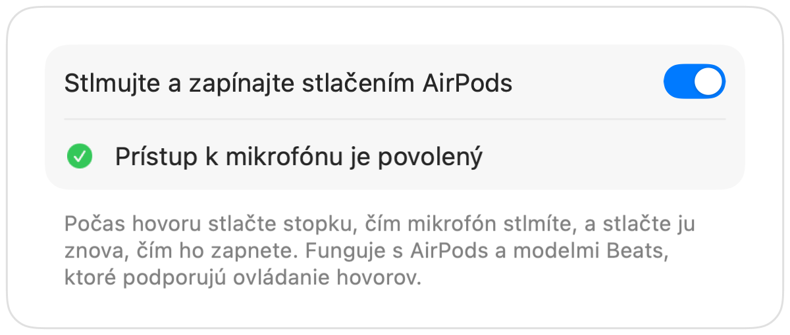
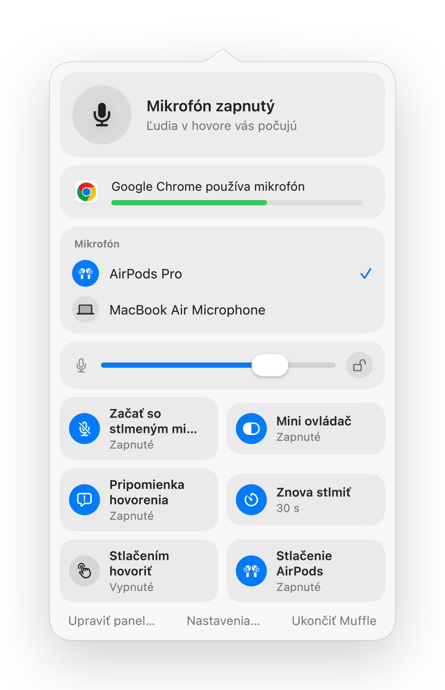

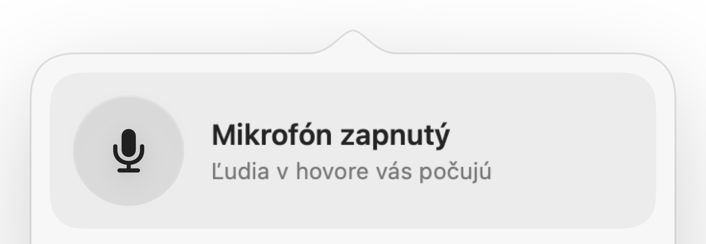
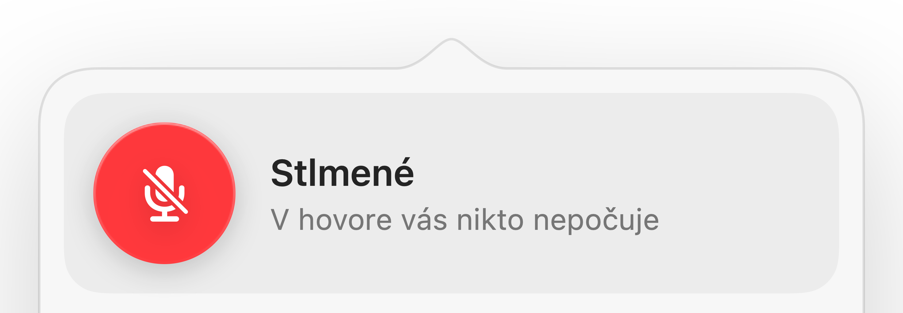
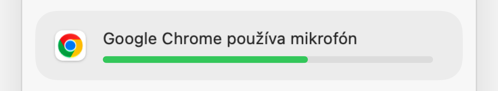
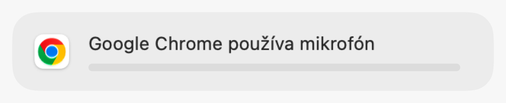
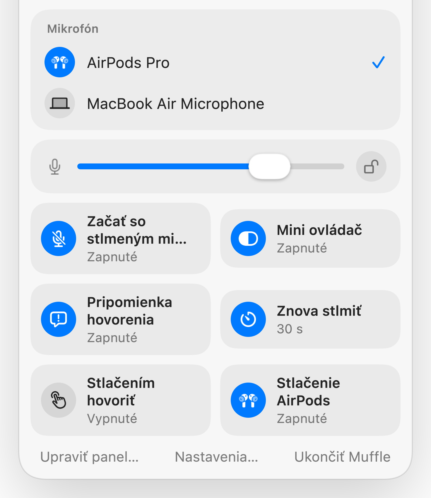
Muffle pre Mac
Stlačte stopku AirPods alebo jednu klávesovú skratku. Muffle vypína priamo mikrofón, takže Google Meet, Zoom, Teams, Slack aj každá iná aplikácia počujú len ticho.
Na 3 dni zadarmo. Potom jedna platba, žiadne predplatné. Pre macOS 14 Sonoma a novší.
Kliknite na tlačidlo, stlačte AirPods alebo použite klávesovú skratku. Muffle vypína priamo mikrofón, takže každá aplikácia počuje iba ticho.
Stlmte mikrofón, zvoľte si mikrofón, uzamknite úroveň a zapínajte či vypínajte funkcie priamo z lišty s ponukami.
Každý mikrofón na vašom Macu máte hneď poruke. Vyberte jeden a každá aplikácia sa prispôsobí.
Chrome, Zoom a Teams menia úroveň mikrofónu samy od seba. Uzamknite ju a Muffle ju vráti späť.
Zapínajte a vypínajte funkcie priamo z panela a vyberte si, ktoré v ňom chcete mať.
Väčšina tlačidiel na stlmenie stlmí iba jednu aplikáciu. Muffle vypína priamo mikrofón, takže každá aplikácia na vašom Macu počuje iba ticho.
Vyberte si ikonu v lište s ponukami: štandardnú, zelenú a červenú alebo len bodku. Muffle sa môže spúšťať spolu s Macom.
Začínajte každý hovor so stlmeným mikrofónom, po jeho skončení ho zapnite a stlmte ho pri uzamknutí Macu alebo odpojení headsetu.
Stlačením prepnite, podržaním hovorte alebo podržaním stlmte. Pridajte samostatné klávesy na stlmenie a zapnutie alebo kláves na hovorenie, napríklad Pravý ⌥.
Vyberte, čo sa má zobrazovať v paneli lišty s ponukami a ktoré rýchle prepínače budú v dolnej časti.
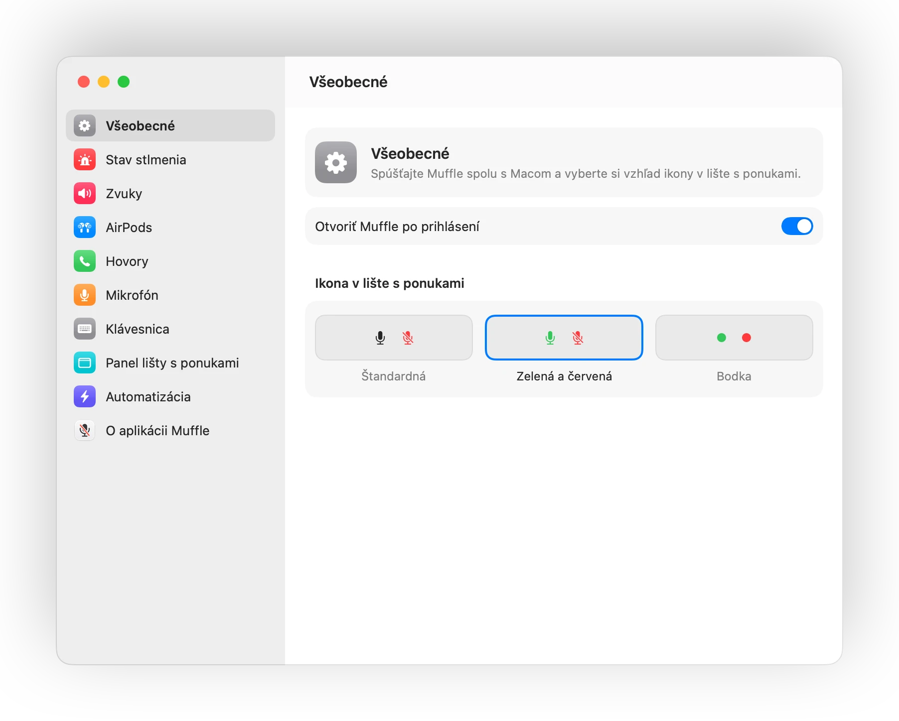
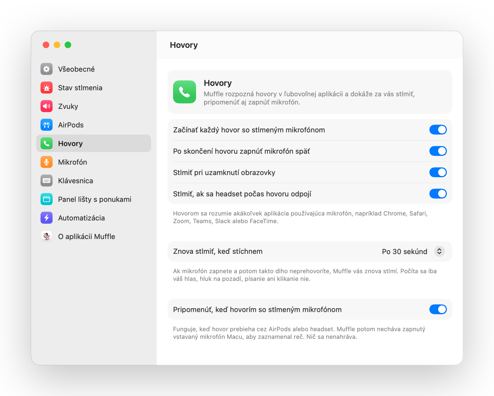
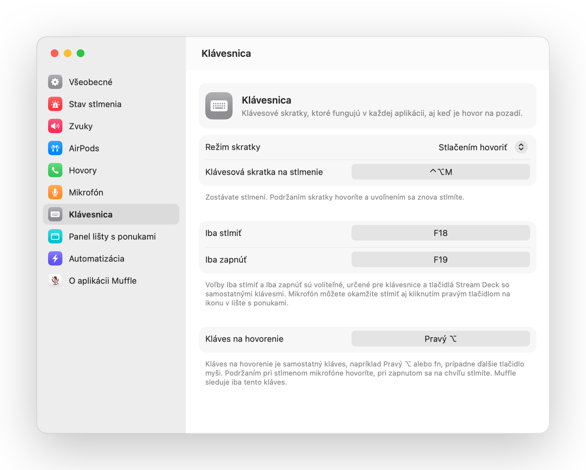
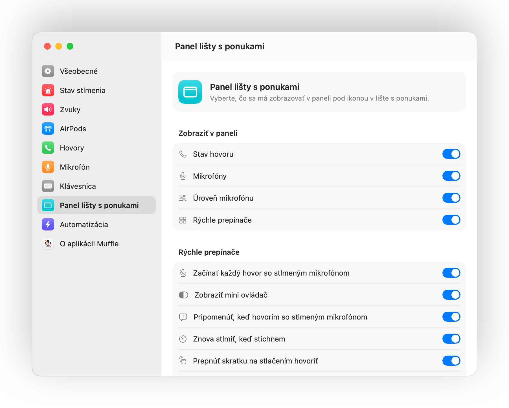
Počas akéhokoľvek hovoru stlačte stopku raz na stlmenie a znova na zapnutie. Funguje to dokonca aj v prehliadači Chrome, kde Google Meet a ďalšie webové hovory stlačenie AirPods ignorujú.

Začnite hovoriť so stlmeným mikrofónom a Muffle vás upozorní skôr, než poviete celý nápad do prázdna.
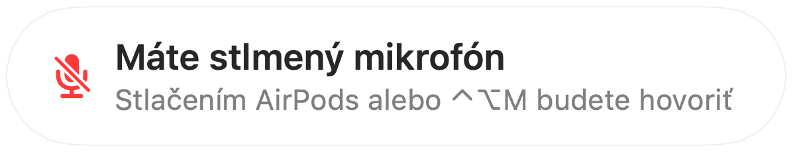
Control-Option-M vás stlmí všade, aj keď máte hovor v tabe na pozadí. Podržte a hovorte, aj keď je mikrofón stlmený, po uvoľnení sa znova stlmí.
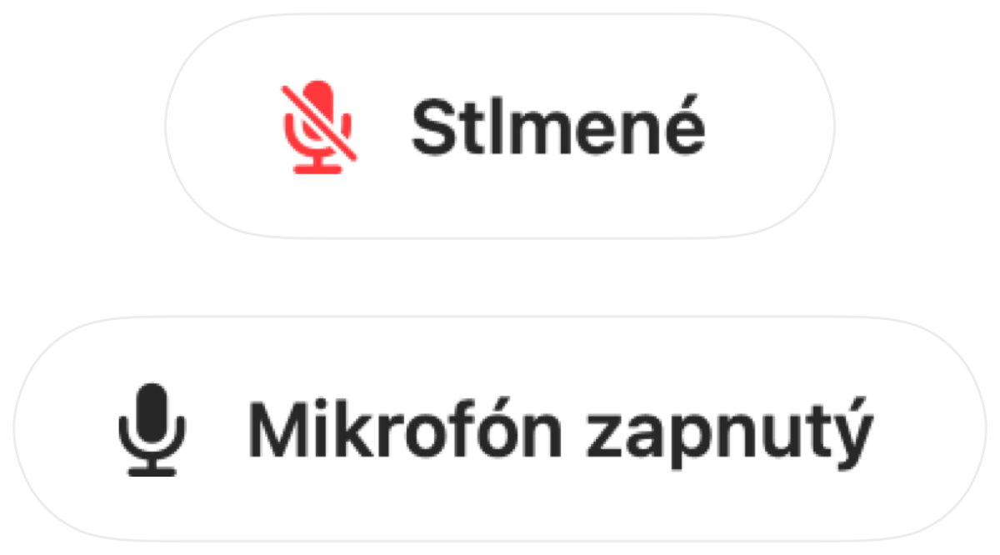
Chrome, Zoom a Teams si samy menia úroveň mikrofónu. Uzamknite ju a Muffle ju okamžite vráti späť.

Malé plávajúce tlačidlo zobrazuje stav mikrofónu počas hovorov. Kliknutím mikrofón stlmíte alebo zapnete.
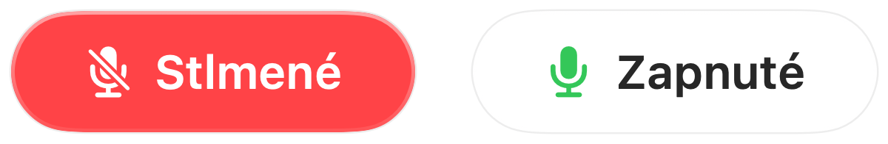
Vyberte si, ako má skratka fungovať: stlačením prepnúť, podržaním hovoriť alebo podržaním stlmiť na odkašľanie. Pridajte samostatné klávesy na stlmenie a zapnutie, alebo podržte jeden kláves, napríklad Pravý ⌥ či ďalšie tlačidlo myši.
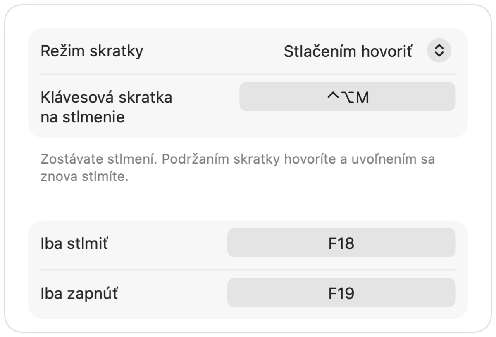
Zapli ste mikrofón, aby ste niečo povedali? Ak potom zostanete ticho počas zvoleného času, Muffle vás znova stlmí. Počíta sa iba váš hlas, písanie ani hluk na pozadí nie.
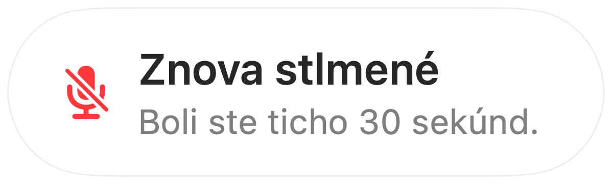
S AirPods v tichej miestnosti Muffle navrhne mikrofón Macu, aby AirPods prehrávali hovor v plnej kvalite. Keď je v okolí hluk, navrhne mikrofón AirPods.
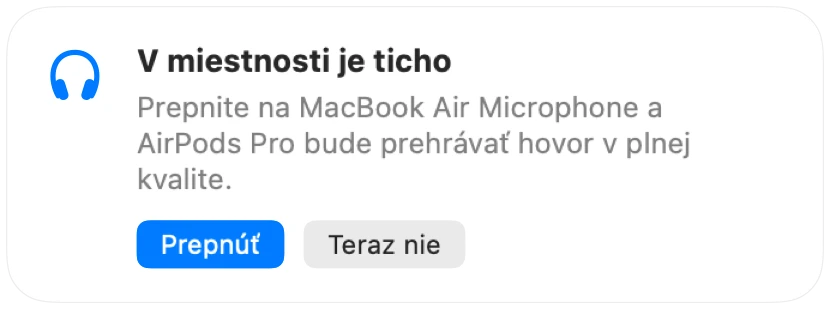
Začínajte každý hovor so stlmeným mikrofónom, po skončení hovoru mikrofón automaticky zapnite a stlmte ho pri každom uzamknutí Macu.
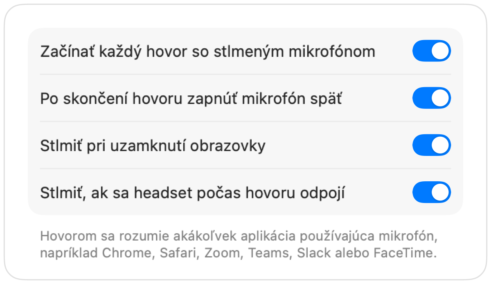
Ak sa headset odpojí uprostred hovoru, Muffle mikrofón stlmí skôr, než hovor prepne na vstavaný mikrofón Macu a odvysiela celú miestnosť.
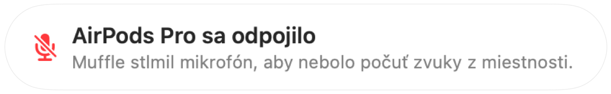
Stlmte mikrofón z aplikácie Skratky, cez Siri, Stream Deck, Raycast alebo tlačidlom v Ovládacom centre.
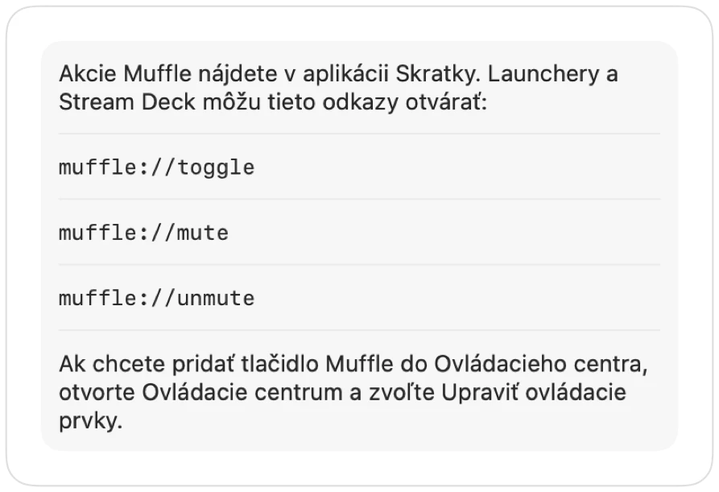
Zelené alebo červené rozsvietenie okrajov obrazovky, farebná ikona v lište s ponukami, plávajúce tlačidlo a zvuk, ktorý môžete pre každý mikrofón vypnúť. Zapnite si tie, ktoré sa vám páčia.
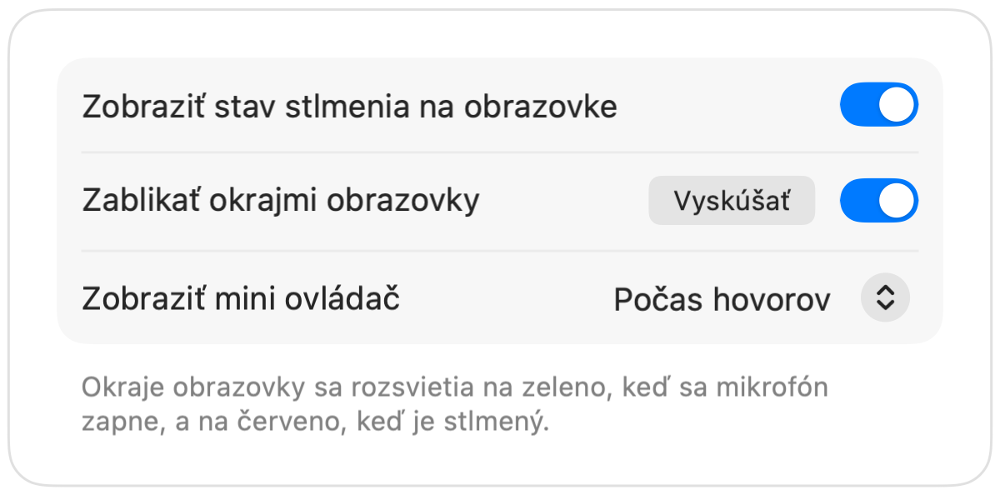
Muffle nikdy nenahráva, neukladá ani neodosiela zvuk. Iba zapína a vypína váš mikrofón a sleduje jeho hlasitosť. Žiadne účty, žiadna analytika, žiadne sledovanie.
Nainštalujte Muffle z Mac App Store a povoľte prístup k mikrofónu.
Pripojte sa k hovoru v ľubovoľnej aplikácii ako zvyčajne.
Stlačte AirPods, stlačte Control-Option-M alebo kliknite na ikonu v lište s ponukami a stlmte mikrofón.
Áno. Chrome neodovzdáva stlačenie AirPods webovým hovorom, takže Muffle zachytí stlačenie a stlmí priamo mikrofón. To isté platí pre akýkoľvek hovor v tabe prehliadača.
Vaša aplikácia na hovory môže stále ukazovať zapnutý mikrofón, pretože Muffle vypína samotný mikrofón namiesto tlačidla v aplikácii. Ľudia tak či tak počujú len ticho. Ikona Muffle v lište s ponukami sa pri stlmení sfarbí načerveno.
AirPods Pro, AirPods 3 a novšie, AirPods Max a tiež modely Beats s ovládaním hovorov. Klávesová skratka a lišta s ponukami fungujú s akýmkoľvek mikrofónom.
Áno. Muffle funguje s každou aplikáciou na Macu, ktorá používa mikrofón, či už ide o samostatné aplikácie alebo hovory v prehliadači.
Nie. Vyskúšajte všetky funkcie bezplatne počas 3 dní, potom Muffle odomknete jednorazovým nákupom.
macOS odovzdáva stlačenie AirPods len aplikáciám, ktoré mikrofón práve používajú, preto Muffle udržiava počas hovorov otvorené tiché spojenie. Nič sa nenahráva.
Muffle pri svojom ukončení mikrofón znova zapne, takže nikdy nezostanete nechtiac ticho.
macOS 14 Sonoma a novší. Tlačidlo v Ovládacom centre vyžaduje macOS 26 alebo novší.
Áno. V Nastaveniach vyberte Stlačením hovoriť a podržaním skratky rozprávajte. Môžete tiež podržať samostatný kláves, napríklad Pravý ⌥ alebo fn, prípadne ďalšie tlačidlo myši.
Keď hovor používa mikrofón AirPods, AirPods sa prepnú do režimu hovoru, ktorý prehráva zvuk v nižšej kvalite. V tichej miestnosti Muffle namiesto toho navrhne mikrofón Macu, takže AirPods naďalej prehrávajú v plnej kvalite.
Nie. Muffle rozpoznáva reč pomocou analýzy zvuku priamo v zariadení od Apple, takže sa počíta iba hovorenie. Písanie, klikanie ani hluk na pozadí nie a nič sa nenahráva.
Krátke a praktické odpovede, ako stlmiť mikrofón na Macu v každej aplikácii.
Muffle si môžete bezplatne vyskúšať na 3 dni.